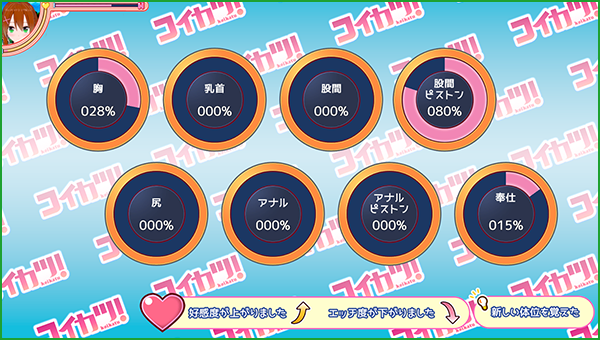
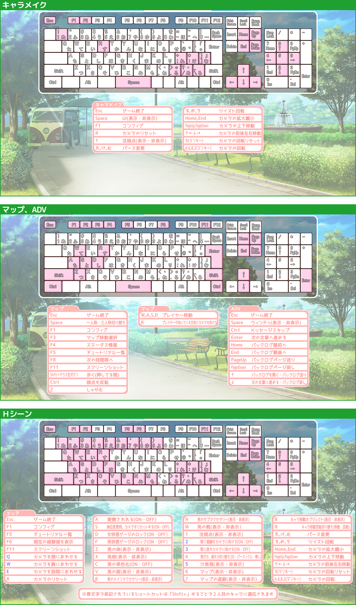

はじめに
この度はWindows 7 / 8.1 / 10 専用ソフト「コイカツ！」をお買い上げいただきまして誠にありがとうございます。
ご使用前に「プレイマニュアル」をよくお読みいただき、正しくお楽しみ下さい。
本マニュアルは 「コイカツ！」に追加ディスク「アフタースクール」を追加した Ver5.0となります。 ※詳細は「 ・アフタースクールについて 」を御覧下さい。
・基本操作
本プログラムでは以下のWindows基本操作を使用します。
①左クリック ： マウスの左ボタンを押して下さい。 ②左ボタンドラッグ ： マウスの左ボタンを押したままマウスを動かして下さい。
本マニュアルでは「～を選択して下さい」という表現がございます。こちらの記載があった場合は「～」の部分にマウスカーソルを移動させて、マウスの左ボタンをクリックして下さい。
（例：「決定ボタンを選択して下さい」とありましたら、「決定ボタン」にマウスカーソルを移動させてマウスの左ボタンをクリックして下さい。）
※場合によってはファイルのコピー・移動・削除等の操作を行う必要がある場合があります。
こちらがわからないという場合は、お手数ではございますがお使いのパソコンメーカーにお問い合わせ下さい。
日本語入力 ： 入力欄で日本語入力をする場合は、入力欄をクリックしてキーボードの「Alt」キーを押しながら「半角／全角」キーを押してから文字を入力して下さい。
※一度この操作を行うとゲームを再起動するか、再び同じ操作をするまで日本語入力になります。
ご使用前に「プレイマニュアル」をよくお読みいただき、正しくお楽しみ下さい。
本マニュアルは 「コイカツ！」に追加ディスク「アフタースクール」を追加した Ver5.0となります。 ※詳細は「 ・アフタースクールについて 」を御覧下さい。
・基本操作
本プログラムでは以下のWindows基本操作を使用します。
①左クリック ： マウスの左ボタンを押して下さい。 ②左ボタンドラッグ ： マウスの左ボタンを押したままマウスを動かして下さい。
本マニュアルでは「～を選択して下さい」という表現がございます。こちらの記載があった場合は「～」の部分にマウスカーソルを移動させて、マウスの左ボタンをクリックして下さい。
（例：「決定ボタンを選択して下さい」とありましたら、「決定ボタン」にマウスカーソルを移動させてマウスの左ボタンをクリックして下さい。）
※場合によってはファイルのコピー・移動・削除等の操作を行う必要がある場合があります。
こちらがわからないという場合は、お手数ではございますがお使いのパソコンメーカーにお問い合わせ下さい。
日本語入力 ： 入力欄で日本語入力をする場合は、入力欄をクリックしてキーボードの「Alt」キーを押しながら「半角／全角」キーを押してから文字を入力して下さい。
※一度この操作を行うとゲームを再起動するか、再び同じ操作をするまで日本語入力になります。
利用規約
「コイカツ！」をプレイする前に必ずお読み下さい。
ハードディスク中にあるデータ及びプログラムなどはバックアップをし、良識的な行動に努めて下さい。
●この作品はすべてフィクションです。
作品内に登場する人物・団体名・地名・商品名・事件及び時代背景・職業は全て架空のものであり、実際のものとは一切関係ありません。
また、このゲームは作品内容及び演出上18歳未満の方の購入・プレイが禁止されています。
登場人物は全て18歳以上です。
また、インターネットでのファイル共有やアップロード、レンタル業務、中古品の取り扱い、及びそれに類する行為での使用は一切認めておりません。
●動画配信、並びにスクリーンショット等の二次利用は禁止とさせて頂きます。
●本作品には暴力的、残酷的なシーン、犯罪にあたる行為等、過激な表現が含まれております。絶対に真似をしないで下さい。
作品内での行動は同意の上の演技でありフィクションです。 この作品の内容と同じ事を現実に行うと法律によって処罰される場合があります。
●長時間プレイする場合は、健康のため1～2時間ごとに10～15分程度の小休止をして下さい。
●ディスクは両面とも、汚したり傷つけたりしないようにご注意下さい。
汚れが付いたときは、柔らかい布で軽く拭き取って下さい。直射日光の当たる所や暖房器具の近くなど、高温の場所、湿気の多い場所には保管しないで下さい。
●ひび割れしたディスクや変形したディスク、あるいは接着剤などで補修したディスクは誤作動の原因になりますので絶対に使用しないで下さい。
以前テレビを見ていて、または強い刺激を受けたときに一時的に筋肉の痙攣や意識の喪失などを経験した方は、ゲームを始める前に医師と相談して下さい。
ゲームのプレイ中にそのような症状が起きた場合は、直ちにゲームを止め、医師の診断を受けて下さい。
●このディスクはPC用です。オーディオ機器などで再生すると、耳を悪くする場合や、スピーカーを壊す恐れがありますので、絶対に再生しないで下さい。
※ 各商品名は一般に各社の登録商標または商標ですが、C及びTMは省略しております。
！免責事項！
●本製品を使用する事で発生したトラブルや損失、損害に対して、当社は一切責任を負いません。ハードディスク中にあるデータ及びプログラムなどはバックアップをし、良識的な行動に努めて下さい。
●この作品はすべてフィクションです。
作品内に登場する人物・団体名・地名・商品名・事件及び時代背景・職業は全て架空のものであり、実際のものとは一切関係ありません。
また、このゲームは作品内容及び演出上18歳未満の方の購入・プレイが禁止されています。
登場人物は全て18歳以上です。
！禁止事項！
●このプログラム、データ及びマニュアルの一部または全部を無断で複製や改造する行為は、法律によって禁止されています。また、インターネットでのファイル共有やアップロード、レンタル業務、中古品の取り扱い、及びそれに類する行為での使用は一切認めておりません。
●動画配信、並びにスクリーンショット等の二次利用は禁止とさせて頂きます。
●本作品には暴力的、残酷的なシーン、犯罪にあたる行為等、過激な表現が含まれております。絶対に真似をしないで下さい。
作品内での行動は同意の上の演技でありフィクションです。 この作品の内容と同じ事を現実に行うと法律によって処罰される場合があります。
！注意！
●モニターに近づき過ぎないように注意して下さい。●長時間プレイする場合は、健康のため1～2時間ごとに10～15分程度の小休止をして下さい。
●ディスクは両面とも、汚したり傷つけたりしないようにご注意下さい。
汚れが付いたときは、柔らかい布で軽く拭き取って下さい。直射日光の当たる所や暖房器具の近くなど、高温の場所、湿気の多い場所には保管しないで下さい。
●ひび割れしたディスクや変形したディスク、あるいは接着剤などで補修したディスクは誤作動の原因になりますので絶対に使用しないで下さい。
！警告！
●疲れているときのプレイや連続した長時間のプレイは健康上好ましくありませんので避けて下さい。以前テレビを見ていて、または強い刺激を受けたときに一時的に筋肉の痙攣や意識の喪失などを経験した方は、ゲームを始める前に医師と相談して下さい。
ゲームのプレイ中にそのような症状が起きた場合は、直ちにゲームを止め、医師の診断を受けて下さい。
●このディスクはPC用です。オーディオ機器などで再生すると、耳を悪くする場合や、スピーカーを壊す恐れがありますので、絶対に再生しないで下さい。
※ 各商品名は一般に各社の登録商標または商標ですが、C及びTMは省略しております。
「コイカツ！」とは？

ストーリー
「 アフタースクール 」について
-
本製品は「 コイカツ! 」に「性格」「衣装」等のキャラメイク追加データと「Ｈモーション」「マップ」「CHARA STUDIO」を追加する「 追加ディスク 」となります。
※プレイするには「 コイカツ! 」本編がインストールされている必要があります。
※ホームページ上で公開されている追加データ（キャラデザ強化パック ＆ CHARA STUDIO 10/26更新版）が含まれております。
アフタースクール インストール後に「キャラデザ強化パック ＆ CHARA STUDIO 10/26更新版」を導入すると正常に動作しなくなりますのでご注意下さい。
●追加コンテンツ詳細
-
○性格： 【 気さく 】 【 帰国子女 】 【 方言娘 】 【 Sッ気 】 【 無感情 】
○キャラメイク追加データ： 詳細は「 追加データ画像 」を御覧下さい。
○追加要素：
・「 コイカツ！ランキング 」機能を追加しました。
・「 キャラメイク 」の「 キャラセーブ 」「 キャラロード 」画面に「性格」「部活」の表示と並び替え機能を追加しました。
・「 セーブデータ数 」を最大100個に拡張しました。
・「 座席表 」の機能を拡張しました。
├２-１クラス以外のクラスを２５人まで登録可能にしました。
├恋人関係の場合「ハートマーク」、コイカツ部員の場合「部員ハンコ」が表示されます。
├「空席ランダム」「全て空席」の対象を「クラス／全体」から選ぶ機能を追加しました。
├「性格」を表示する項目を追加しました。
├「個性」を変更する機能を追加しました。
└ 転校・転入・席入れ替えを行う「 座席表補助操作 」を追加しました。
・マップ画面での機能を拡張しました。
├「女の子同士での会話」が聞こえるようになりました。
└ キーボードの「WASD」を使って移動が可能になりました。
・私服登校日（土曜日）を追加しました。※自室メニューに『週末にする』ボタンを追加しました。土曜に登場する固定キャラは先生のみとなっております。
・「 Ｈシーン 」に関係する機能・イベントを追加しました。
├「 Ｈシーン 」中にキーボードのＦ６で現在の経験値を表示する」機能を追加しました。
├「イキそう」ボタンを追加しました。
├「机」で「奉仕」出来る機能を追加しました。
├「 フリーＨ 」で潮吹きが出来るようになりました。
├「屋上いたずらＨ」を追加しました。
│ ※屋上に「１回以上Ｈ経験があるＨ度５０％以上の女の子」ｏｒ「屋上に居る２回以上Ｈをした麗奈先生（数学教師）」がいる時にベンチで「寝る」アイコンを選択すると確率で発生します。
├「保健室いたずらＨ」を追加しました。
│ ※保険室に「１回以上Ｈ経験があるＨ度５０％以上の女の子」ｏｒ「保健室に居る２回以上Ｈをしたリナ先生（保健教師）」がいる時にベッドで「寝る」アイコンを選択すると確率で発生します。
├「 オナニーからの通常Ｈ 」を追加しました。
├「 レズＨ 」を追加しました。
├「 複数Ｈ 」を追加しました。
├「 先生キャラへの生挿入Ｈ 」が可能になりました。
└ エッチ後に近くに女の子がいた場合、「モジモジする」もしくは「恥ずかしがって逃げる」反応を追加しました 。
・「 親密度システム 」を追加しました。
・「 マップ選択デート 」を追加しました。
・「 エクストラ 」 のイベントにてショートカットやスクリーンショットが使用可能になりました。
・「 コンフィグ：エッチ 」に項目を追加しました。
└ 「乳首立ち」を追加しました。
・「 コンフィグ：その他 」に項目を追加しました。
├「アクセサリー常時表示」を追加しました。
├「Ctrlキーをしゃがみに設定」を追加しました。
├「カメラ設定：反転」を追加しました。
├「トイレで視点を一人称に設定」を追加しました。
└ 「三人称」「一人称」時の操作設定を追加しました。
・「 コンフィグ：機能拡張 」を追加しました。
├「初回H緩和」機能を追加しました。
├「イキそうボタン」機能を追加しました。
├「Ｈ経験値n倍」機能を追加しました。
├「ＡＤＶイベントを省略させない」機能を追加しました。
├「会話時間のないキャラを立ち止まらせない」機能を追加しました。
├「クラスの登録人数を最大にする」機能を追加しました。
├「女の子達の主人公に対する行動設定を変更・調整」機能を追加しました。
├「地下鉄マップのモブを表示する」機能を追加しました。
└「マップ選択デートに入らない」機能を追加しました。
○Ｈモーション：
オナニー： 【 体育倉庫：ハードルオナニー 】 ※オナニーに関してはマップ画面：オナニーをお読み下さい。
奉仕： 【 ベンチフェラ 】 【 オナホ手コキ（※） 】 挿入： 【 寝バック 】 【 種付けプレス（※） 】 （※）ゲーム開始からはプレイ出来ません。それぞれの入手条件を満たすとプレイ可能です。
特殊Hスポット： 【 部室：ソファ騎乗位 】 【 ロッカールーム、プール：椅子またがりフェラ 】 【 体育倉庫：跳び箱バック 】 【 職員（男子）トイレ：マングリ正常位 】
※特殊Hスポットに関してはマップ画面：コイカツ！スポットをお読み下さい。
特殊奉仕： 【 密着手コキ（淫乱+電車限定） 】 特殊挿入： 【 押し付けバック（H慣れ以上 +電車限定） 】
複数_奉仕： 【 Ｗフェラ 】 【 Ｗフェラ 入れ替え 】 複数_挿入： 【 騎乗位クンニ 】 【 騎乗位クンニ 入れ替え 】 【 後背位手マン 】 【 後背位手マン 入れ替え 】
○マップ： 【 ラブホテル 】 【 カラオケ 】 【 教会 】 【 地下鉄（満員） 】 【 地下鉄 】 【 公園（夜） 】
○CHARA STUDIO ： キャラクターやマップ等を自由に配置し、表情やポーズ、アニメーションを組み合わせて思い通りのシーンを演出するジオラマソフトとなります。
詳しくは 「 CHARA STUDIO プレイマニュアル 」を御覧下さい。
※CHARA STUDIOはゲーム本編にＨシーンを追加するシーンエディタではございません。
動作環境
-
- 必須動作環境
- 推奨動作環境
- 対応OS
- Windows 7 / 8.1 / 10 64bit日本語版 ※1
- DirectX
- DirectX 11 に対応した環境
- CPU
- Intel Core ｉ３ 4000 以上 ※２
- Intel Core ｉ５ 4000 以上 ※２
- メインメモリ
- 実装 ４ＧＢ 以上
- 実装 ８ＧＢ 以上
- HDD空き容量
- ３０ＧＢ 以上
- グラフィック
- VRAM １ＧＢ 以上 ※３ ※４
- VRAM ２ＧＢ 以上 ※３
- ROMドライブ
- DVD-ROMドライブ
- 接続機器
- ホイールマウス・キーボード、ディスプレイ解像度 1280×720 以上
-
※１ 32bit 版は非対応となります。タッチ操作は非対応となります。
※２ intel社製 CPUを推奨します。
※３ 「NVIDIA社製 GeForce 500 シリーズ以上」 「ATI社製 RADEON HD6000シリーズ以上」搭載の グラフィックカード、
「Intel社製 Intel HD Graphics 4000 以上」以外は動作保証外となります。
「～に内蔵」もしくは「メインメモリ共有」と表記のあるグラフィックシステムは推奨動作環境に含まれません。
※４ VRAMが1GBの場合、簡易設定を「ノーマル」もしくは「パフォーマンス」に設定して下さい。
※中古パソコン・自作パソコンではサポートが行えない可能性がございます。
※ ノートパソコンの場合、同スペックのデスクトップパソコンと比べて動作が遅くなる事がございます。
メーカー製パソコンはドライバのバージョンアップや機器の増設をした場合、動作保証をしないケースがほとんどです。
これらを踏まえた上で弊社では最大限のサポートをしてまいりますが、パソコンのパーツやドライバ等の組み合わせによる不具合につきましては、
弊社が動作を保証することは出来ません。ご了承下さいますようお願い申し上げます。
・お使いのパソコンが必須動作環境を満たしているかどうかは、お使いのパソコンハードメーカーのサポートへお問い合わせ下さい。
・必要な空き容量は環境により変化いたしますので予めご了承下さい。
・動作環境を充たしている場合でもドライバ等が古い場合、正常に動作しない場合があります。
・ドライバはインターネットで各メーカーから入手します。
インターネットを使える環境が無いとドライバの入手が困難になり、正常に動作させる事が出来ない場合があります。
インストール方法
-
①DVDドライブに「コイカツ！ ディスク１」を入れると、自動的にスタートアップが表示されます。
※表示されない場合は、コンピューターもしくはPCを開きDVDドライブを右クリック→開く でディスクを開き「Startup.exe」をダブルクリックで起動して下さい。
②スタートアップの「コイカツ！をインストールする」を選択すると、インストーラーが起動しますので画面の指示に従いインストールを行って下さい。
※「C:\Program Files」等のシステムフォルダや、バックアップ領域など、特定の場所にインストールすると各種データの保存が行えませんので該当する場所にはインストールしないで下さい。
※インストール先の変更を行わずに、インストーラーが指定した場所へインストールする事を推奨致します。
※ディスク交換指示が表示されたら「コイカツ！ ディスク２」に入れ替えて下さい。
③インストールが完了しますと、デスクトップに「コイカツ！」のアイコンが表示されます。
④お持ちであれば 「コイカツ！ 性格追加パック」をDVDドライブに入れて下さい。
※コンピューターもしくはPCを開きDVDドライブを右クリック→開く でディスクを開き「インストールにつきまして.txt」に従ってインストールを行って下さい。
※「コイカツ！ 性格追加パック」をお持ちでない場合は⑤にお進み下さい。
⑤「コイカツ！ アフタースクール」をDVDドライブに入れて下さい。
※コンピューターもしくはPCを開きDVDドライブを右クリック→開く でディスクを開き「イコイカツ！アフタースクール 解凍・導入方法.txt」に従ってインストールを行って下さい。
デスクトップにあります「コイカツ！」アイコンをダブルクリックで起動しますと「 初期設定 」画面が表示されますので、こちらよりゲームを起動して下さい。
※一度インストールを行えば、再度インストールを行う必要はございません。
※ゲームのインストールには環境によって異なりますが1時間前後かかる場合がございます。
その間ステータスバーがすぐに一杯になって進まなくなったり、「応答なし」になる事があるかもしれませんが暫くお待ち下さいますようお願い致します。
※「性格追加パック」をお持ちの場合は、必ず「コイカツ！」→「性格追加パック」→「アフタースクール」の順にインストールして下さい。
※「アフタースクール」インストール後は「アフタースクール」発売以前の無料追加データはインストールしないで下さい。
アンインストール方法
「コイカツ！ アフタースクール」は「コイカツ！」に追加する形でインストールを行うため、単独で削除する事ができません。
アンインストールを行う場合は、「コイカツ！」をアンインストール後に手動で削除して頂く必要があります。
・Windowsの「コントロールパネル」より「プログラムのアンインストール」から「ILLUSION コイカツ！」をアンインストールして下さい。
・アンインストール後に、インストール先を開き残っているファイルを削除して下さい。 ※標準では C:\illusion にインストールされています。
アンインストールを行う場合は、「コイカツ！」をアンインストール後に手動で削除して頂く必要があります。
・Windowsの「コントロールパネル」より「プログラムのアンインストール」から「ILLUSION コイカツ！」をアンインストールして下さい。
・アンインストール後に、インストール先を開き残っているファイルを削除して下さい。 ※標準では C:\illusion にインストールされています。
初期設定
デスクトップにあります「 コイカツ! 」を起動しますと「 初期設定 」が表示されます。
-
① 画面サイズ
表示する画像解像度を指定します。
② 全画面表示 チェックを入れると「全画面」、外すと「ウインドウ」で起動します。
「全画面」で正常に表示されない場合は「ウインドウ」に設定して下さい。
③ 簡易設定・パフォーマンスパソコンに負担をかけない設定です。
・ノーマル速度・品質の中間の設定です。
・クオリティ高スペック対応の設定です。
④ ディスプレイ ディスプレイを複数使用している場合「全画面」で表示するディスプレイを選びます。
※ディスプレイが１つの場合は関係ありません。
⑤ 起動メニュー・ゲーム開始「コイカツ！」ゲーム本編を開始します。※タイトル画面が表示されます。
・スタジオ開始「CHARA STUDIO」を開始します。
・VR開始VRプログラムがインストールされている場合「コイカツ！VR」を開始します。
※起動したいプログラムの右側にある「マニュアルを読む」を選択するとマニュアルを表示します。
⑥ システム情報 使用しているパソコン環境を表示します。
⑦ インストール先を開く ゲームがインストールされているフォルダを開きます。
⑧ 終了 ゲームを終了します。
⑨ キャラフォルダを開く キャラデータが保存されているフォルダを開きます。
⑩ 体験版のキャラフォルダを開く 体験版がインストールされている場合、体験版のキャラデータが保存されているフォルダを開きます。
ユーザーフォルダの説明
「コイカツ！」のインストール先を開くと[ UserData ]フォルダがあります。各種保存したデータはこのフォルダの中にあります。
※標準のインストール先は C:\illusion\Koikatu となります。
・[ Save ] ： 各種設定データが格納されます。 ・[ Cap ] ： スクリーンショット機能で撮影した画像が保存されます。 ・[ Coordinate ] ： キャラメイクで保存した衣装セットが格納されます。
・[ Chara ] ： 保存したキャラデータが格納されます。※フォルダ内の「female」フォルダに女性、「male」フォルダに男性キャラのセーブデータが格納されます。
・[ CardFrame ] ： 撮影モードで使用する前面フレーム、背面フレーム用画像が格納されてます。 ※フォルダ内の「Front」に前面フレーム、「Back」フォルダに背面フレーム画像が格納されています。
・[ bg ] ： キャラメイクの背景で使用する画像が格納されます。
※標準のインストール先は C:\illusion\Koikatu となります。
・[ Save ] ： 各種設定データが格納されます。 ・[ Cap ] ： スクリーンショット機能で撮影した画像が保存されます。 ・[ Coordinate ] ： キャラメイクで保存した衣装セットが格納されます。
・[ Chara ] ： 保存したキャラデータが格納されます。※フォルダ内の「female」フォルダに女性、「male」フォルダに男性キャラのセーブデータが格納されます。
・[ CardFrame ] ： 撮影モードで使用する前面フレーム、背面フレーム用画像が格納されてます。 ※フォルダ内の「Front」に前面フレーム、「Back」フォルダに背面フレーム画像が格納されています。
・[ bg ] ： キャラメイクの背景で使用する画像が格納されます。
体験版キャラデータの使用方法
体験版で作成したキャラデータを製品版でも使用する事が出来ます。
①コイカツ！キャラメイク体験版のインストールフォルダを開きます。
※「 初期設定 」の「インストール先を開く」ボタンで開く事が出来ます。
②「UserData」フォルダを右クリック → コピー でコピーします。
③コイカツ！のインストールフォルダを開きます。 ※「 初期設定 」の「インストール先を開く」ボタンで開く事が出来ます。
④フォルダ内の何もない部分を 右クリック → 貼り付け でデータを貼り付けます。
⑤「 キャラメイク 」で読み込む事が出来ます。
②「UserData」フォルダを右クリック → コピー でコピーします。
③コイカツ！のインストールフォルダを開きます。 ※「 初期設定 」の「インストール先を開く」ボタンで開く事が出来ます。
④フォルダ内の何もない部分を 右クリック → 貼り付け でデータを貼り付けます。
⑤「 キャラメイク 」で読み込む事が出来ます。
タイトル画面
-
⑤ コンフィグ ゲーム内の設定を変更する事が出来ます。
⑥ エンド ゲームを終了します。
⑦ ランキング 他プレイヤーのプレイ状況を見る事が出来ます。
※インターネット接続環境が必要となります。
-
① スタート
ゲームを開始します。 ※「 学園作成画面 」に移行します。
② ロード ゲームを続きから始めます。※「 ロード画面 」に移行します。
③ キャラメイク キャラの容姿・衣装等の設定や、オンライン上のアップローダーへの投稿やダウンロードが行えます。
・女キャラ女キャラのメイクを開始します。
・男キャラ男キャラのメイクを開始します。
・アップローダーゲーム内から「 アップローダー 」に投稿する事が出来ます。
・ダウンローダー「 アップローダー 」のキャラをダウンロードする事が出来ます。
※アップローダーの利用にはインターネット接続環境が必要となります。
※利用前に必ず アップローダー利用規約 を御覧下さい。
・戻る前の画面に戻ります。
④ エクストラ ゲーム進行状況に応じて特殊な機能が開放されます。
・フリーＨ好きなキャラ、マップ、時間帯の組み合わせでＨシーンを楽しむ事が出来ます。
・ライブ好きなキャラでライブシーンを鑑賞する事が出来ます。
・イベントシナリオキャラ のイベント回想が行えます。
・ｳｪﾃﾞｨﾝｸﾞ好きなキャラと結婚式を挙げる事が出来ます。※条件を満たすと表示されます。
・戻る前の画面に戻ります。
キャラメイク
キャラの容姿・衣装等を設定する事が出来ます。
-
-
① メインメニュー メイク部位とシステムです。選択すると「② メイク項目」に詳細が表示されます。
※左から「 顔 」「 身体 」「 髪 」「 服装 」「 アクセサリ 」「 プロフィール 」
「 セーブ・ロード 」「 BGM切り替え 」となります。
※「 BGM切り替え 」は選択するとＯＮ／ＯＦＦが切り替わります。
※「 セーブ・ロード 」で選べる「表現方法」は、キャラ個別ではなく世界の設定となります。
② メイク項目 「① メインメニュー」で選択された項目の詳細を表示します。
各部位のメイクを「ボタン選択」や「スライダー操作」等で行います。
※詳しくは 顔型や体型の調整 種類と色の選択 アクセサリ を御覧下さい。
③ 確認メニュー キャラの状態を変更して各種確認を行う事が出来ます。
④ コーディネートタイプ 着用する状況を選択します。
服装とアクセサリーの設定はコーディネートタイプごとに記憶されます。
⑤ キャラビュー メイク中のキャラを表示しています。
「 カメラ操作 」で３６０°自由に回転させる事が出来ます。
⑥ ネームプレート 現在メイクしているキャラの名前が表示されます。
※名前は プロフィール にて変更する事が出来ます。
⑦ 戻る 前の画面に戻ります。
●顔型や体型の調整（スライダー操作） ： 顔型や体型を変更する場合はスライダーでの操作となります。以下、例として体型変更方法を記載します。

-
① 「メインメニュー」より「体」を選択します。
② 「メイク項目」から調整したい部位を選択します。
③ 調整可能部位とスライダーが表示されます。
※スライダー部分、または右側の「数値入力」で調整する事が出来ます。
※顔型、体型以外のスライダー操作も同じ操作方法となります。
●種類と色の選択 ： 多くの項目は「種類」と「色」の変更が可能です。以下、例として前髪の種類と色変更方法を記載します。

-
①
「メインメニュー」より「髪」を選択します。
② 「メイク項目」から「前髪」を選択します。
③ 前髪用のメイク項目が表示されますので「前髪の種類」を選択します。
④ 前髪用の「選択ウインドウ」が表示されますので、変えたい髪を選択します。
⑤ メイク項目の「前髪の基本の色」を選択します。
⑥ 色変更用のウインドウが表示されますので「ピッカー」「スライダー」「プリセット」の
いずれかから色を選択します。
※選んでいる服やアクセサリによって「サブカラー」が選択できる場合があります。
※色の選択は「左ボタンクリック」もしくは「左ボタンドラッグ」で行います。
※「スライダー」の数値部分は選択後にキーボードのテンキーで数値入力が可能です。
※「プリセット」の「01～05」は右端の項目を「左ボタンクリック」すると
「見本」に表示されている色を保存します。
※「透明度」が変更できる項目に関しては「透明度」のスライダーが表示されます。
●衣装設定 ： 服、下着、靴、靴下等の設定を行う事が出来ます。
-
①
状況を選択します。
② 「メインメニュー」より「服」を選択します。
③ 「メイク項目」から設定したい部位を選択します。
④ 変更したい「種類」を選択します。
※色変え可能 の表記がある項目は 色の変更を行う事が出来ます。
⑤ 一覧が表示されますので着せたい服を選択します。
●アクセサリ設定 ： アクセサリは最大20個まで好きな大きさ・好きな位置に付ける事が出来ます。以下、例として眼鏡を頭にかける方法を記載します。

-
①
「メインメニュー」より「アクセサリ」を選択します。
② 好きな番号を選択します。 ※例では「スロット01」を選択します。
③ メイク項目の「タイプ」を選択します。
④ 一覧から「 顔 」を選択します。
⑤ 顔用アクセサリ項目が追加されますので「種類」を選択します。
⑥ 一覧より掛けたい眼鏡を選択します。
⑦ 「調整01」を選択します。
※アクセサリを部分的に調整できる場合「調整02」が表示されます。
⑧ 調整用の項目が表示されますので、各項目の調整を行います。
各項目の「Ｘ、Ｙ、Ｚ」を「左ボタンドラッグ」で操作するか「数値入力」で
調整する事が出来ます。
・位置X ： 左右横方向の位置を調整します。
・位置Y ： 上下縦方向の位置を調整します。
・位置Z ： 前後の位置を調整します。
・角度X ： 縦回転させます。
・角度Y ： 横回転させます。
・角度Z ： 時計回転させます。
・拡縮X ： 横方向の大きさを変更します。
・拡縮Y ： 縦方向の大きさを変更します。
・拡縮Z ： 厚みを変更します。
※アクセサリの親を変更すると、親の動きに追随して動くようになります。
-
■操作軸 ： 操作軸による直接的な操作を行う事が出来ます。 -
① 操作軸を表示する
「操作軸を表示する」を有効にすると、アクセサリに操作軸が表示されます。
マウスのドラッグ操作でアクセサリの移動・回転を行う事が出来ます。
② 移動／回転 操作軸の種類を切り替えます。
③ 速度／大きさ ・速度 ： 操作した際の移動量を設定します。
・大きさ： 操作軸の大きさを設定します。
移動・④移動ボックス対象を移動させます。
・⑤Z方向移動対象をZ軸方向に移動させます。
・⑥X方向移動対象をX軸方向に移動させます。
・⑦Y方向移動対象をY軸方向に移動させます。
回転・⑧Z軸回転円対象をZ軸回転（時計回転）させます。
・⑨X軸回転円対象をX軸回転（縦回転）させます。
・⑩Y軸回転円対象をY軸回転（横回転）させます。
-
■「コピー」 ： 設定したアクセサリを他のコーディネートタイプにコピーする事が出来ます。 -
①
アクセサリ編集後、「メイク項目」の「コピー」を選択します。
② 「コピー元」のコーディネートタイプを選択します。
③ コピーしたいアクセサリを選択します。
④ 「コピー先」のコーディネートタイプを選択します。
⑤ 選択したアクセサリがコピーされます。
-
■「入れ替え」 ： アクセサリの「調整」値を他のスロットにコピーしたり、複製を作る事が出来ます。 
-
①
アクセサリ編集後、「メイク項目」の「入れ替え」を選択します。
② 「コピー元」のアクセサリスロットを選択します。
③ 「コピー先」のアクセサリスロットを選択します。
④ コピーする項目を選択します。
・スロットをコピー ：「コピー元」アクセサリを「コピー先」に全てコピーします。
・左右の親を切り替える ： 左耳右耳等、左右の表記がある「親」を指定している場合、
「スロットをコピー」選択時に逆の親に変更されます。
・調整をコピー ： 「コピー元」アクセサリの調整値のみをコピーします。
・左右反転コピー ：「コピー元」アクセサリの調整値「角度Y」のみを反転してにコピーします。
・上下反転コピー ： 「コピー元」アクセサリの調整値「角度X」のみを反転してにコピーします。
※アクセサリを部分的に調整できる場合「調整02」が表示されます。
●キャラのプロフィール設定 ： キャラの名前や性格、好み等のキャラの個性に関わる設定を行う事が出来ます。
-
①
「メインメニュー」より「プロフィール」を選択します。
② 「キャラ」を選択すると設定画面が表示されます。
③ プロフィールを設定する事が出来きます。
●衣装のセーブ・ロード・削除 ： 設定した服装とアクセサリの管理を行う事が出来ます。
-
①
「メインメニュー」より「セーブ・ロード」を選択します。
② 「服の保存と削除」を選択すると衣装データの管理が表示されます。
③ 保存されている衣装データの一覧です。上書きセーブ・ロードを行う際にこちらから選択します。
④ 一覧の並び順を変更する事が出来ます。
⑤ 管理コマンドです。実行したい項目を選択します。
・削除 ： 一覧で選択している衣装データを削除します。
※ゲームだけではなく、パソコン自体からデータが削除されますのでご注意下さい。
・新規セーブ ： 現在キャラビューに表示されている衣装を保存します。
※保存する際に名前入力欄が表示されます。※保存が完了すると一覧に追加されます。
・上書きセーブ ： 一覧で選択している衣装データを現在表示されている衣装に上書きします。
-
■ロード ： 衣装データから読み込みたい項目を選択して読み込む事が出来ます。 -
①
「メインメニュー」より「セーブ・ロード」を選択します。
② 「服読み込み」を選択すると読み込み画面が表示されます。
③ 保存されている衣装データの一覧です。読み込みたい衣装を選択します。
④ 一覧の並び順を変更する事が出来ます。
⑤ 読み込む項目を選択する事が出来ます。
⑥ 選択されている情報を読み込みます。
※保存していない情報は破棄されますのでご注意下さい。
●キャラの新規セーブ ： キャラの新規セーブを行う際には、キャラセーブデータで使用するプレビュー画像を作成します。
-
①
「メインメニュー」より「セーブ・ロード」を選択します。
② 「キャラ保存と削除」を選択するとキャラデータの管理が表示されます。
③ 「新規セーブ」を選択すると撮影モードに移行します。
④ 「学生証画像（ゲーム本編で使用されるプロフィール画像）」を作成します。
赤線のガイドに入るように位置・角度を調整します。
⑤ 表情やポーズ等を設定します。
⑥ 「学生証画像」を撮影します。
撮影した画像は、画面左側の「学生証画像」にて確認する事が出来ます。
⑦ キャラセーブデータ用のプレビュー画像を作成します。
「カード画像を撮影」を選択します。
⑧ 枠内に入るように位置・角度を調整します。
⑨ 表情やポーズ等を設定します。
⑩ カード画像を撮影します。
撮影した画像は、画面左側の「カード画像」にて確認する事が出来ます。
⑪ 撮影した画像を確認する事が出来ます。
⑫ 撮影した画像でキャラセーブデータを作成します。
※保存が完了するとキャラデータの一覧に撮影した画像で追加されます。
●キャラの上書きセーブ・削除 ： キャラの上書きセーブを行う際には、プレビュー画像の再作成を行うか選択する事が出来ます。
-
①
「メインメニュー」より「セーブ・ロード」を選択します。
② 「キャラ保存と削除」を選択するとキャラデータの管理が表示されます。
③ 保存されているキャラデータの一覧です。上書きセーブを行う際にこちらから選択します。
④ 一覧の表示や並び順を変更する事が出来ます。
・部活と性格キャラデータで設定されている部活と性格の表示を切り替えます。
・名前～性格選択した項目を基準に一覧を並び替えます。
⑤ 管理コマンドです。実行したい項目を選択します。
・削除一覧で選択しているキャラデータを削除します。
※ゲームだけではなく、パソコン自体からデータが削除されますのでご注意下さい。
・上書きセーブ一覧で選択しているキャラデータを現在のキャラに上書きします。
※「上書きセーブ」を選択すると、確認画面が表示されます。
⑥ 「変更して保存」を選択すると「 撮影モード 」に移行します。
「変更せず保存」を選択するとデータだけを上書きします。
●キャラのロード ： 保存したキャラの読み込みを行う事が出来ます。容姿や衣装のみの読み込みも行う事が出来ます。
-
①
「メインメニュー」より「セーブ・ロード」を選択します。
② 「キャラ読み込み」を選択すると読み込み画面が表示されます。
③ 保存されているキャラデータの一覧です。読み込みたいキャラを選択します。
④ 一覧の表示や並び順を変更する事が出来ます。
・部活と性格キャラデータで設定されている部活と性格の表示を切り替えます。
・名前～性格選択した項目を基準に一覧を並び替えます。
⑤ 読み込む項目を選択する事が出来ます。
⑥ 選択されているキャラ情報を読み込みます。
※保存していない情報は破棄されますのでご注意下さい。
●アップローダー ： 弊社ホームページで公開している「 キャラクターアップローダー 」に作成したキャラをゲーム内から投稿する事が出来ます。
-
※パソコンにインターネット接続環境が必要となります。必ず ご利用規約 を御覧下さい。
※状況によりアップロードされたキャラを弊社で確認する形式になる可能性があります。
その場合、アップロードから公開まで時間がかかります事を、予めご了承下さい。
-
① 男キャラ ／ 女キャラ
キャラリストの性別を切り替えます。
② キャラリスト キャラメイク、ダウンロードで保存されたキャラ一覧です。
・名前 ： リストを名前順に並び替えます。
・日付 ： リストを登録した日付順に並び替えます。
③ キャラ画像 現在選択されているキャラの画像と詳細です。
④ ハンドルネーム アップローダーに表記される投稿者の名前です。 ※無記入可。16文字まで。
⑤ コメント アップロードするキャラのコメントを記入して下さい。 ※無記入可。80文字まで。
⑥ 利用規約 ご利用規約を表示します。必ずご確認下さい。
⑦ アップロード 選択しているキャラをアップロードします。
⑧ タイトル タイトル画面に戻ります。
⑨ダウンロードへ ダウンロード画面に移行します。
●ダウンローダー ： 弊社ホームページで公開している「 キャラクターアップローダー 」からキャラをゲーム内からダウンロードする事が出来ます。
-
※パソコンにインターネット接続環境が必要となります。必ず ご利用規約 を御覧下さい。
※ダウンロードしたデータは chara フォルダ に保存されます。
-
① 男キャラ ／ 女キャラ
キャラリストの性別を切り替えます。
② キャラリスト キャラクターアップローダーで公開されているキャラ一覧です。
③ リスト操作 キャラリストの表示を切り替える事が出来ます。
・自分のキャラ ： 自分でアップロードしたキャラのみを表示します。
・順位を表示 ： リストに現在の順位を表示します。
・表示サイズ(小) ： リストを１ページ２１キャラ表示に変更します。
・表示サイズ(大) ： リストを１ページ１０キャラ表示に変更します。
・◀/▶ ： リストを 前のページ／次のページ に切り替えます。
・|◀/▶| ： リストの 最初のページ／最後のページ に切り替えます。
・ｘ／ｘ ： 現在のページ／総ページ数 が表示されます。
④プロフィール 現在リストで選択されているキャラのプロフィールです。
⑤検索条件 選択された条件に沿ったキャラをリストに表示します。
⑥ダウンロード リストで選択しているキャラをダウンロードします。
⑦削除 選択したキャラをアップローダーから削除します。
※「リスト操作」で「自分のキャラ」選択時のみ使用出来ます。
⑧タイトル タイトル画面に戻ります。
⑨アップロードへ アップロード画面に移行します。
●男のメイク ： 男性キャラも女性キャラとほぼ同様のメイクを行う事が出来ます。
-
基本的な操作方法は キャラメイク と同じとなります。
学園作成
ゲームを最初から始める場合、キャラが通う学園を作成します。
-
① 男キャラ一覧
保存されている男キャラデータの一覧です。
プレイヤーキャラに指定したいキャラを選択します。
※学園作成後でも変更することは可能です。
② エンブレム 学園のエンブレムを選択します。選択したエンブレムは学生証の左上に表示されます。
③ 学園名 作成する学園の名前を入力する事が出来ます。
※何も入力しない場合は自動で「 コイカツ女学園 」となります。
④ 学生証 設定した結果が表示されます。
⑤ 決定 学園を作成します。 座席表画面に移行します。
⑥ 戻る 前の画面に戻ります。
座席表画面
-
⑥ 補助メニュー・ネットワークから「⑤：空席ﾗﾝﾀﾞﾑ」を実行時にアップローダーからキャラを選出します。
・ローカルから「⑤：空席ﾗﾝﾀﾞﾑ」を実行時にCharaフォルダからキャラを選出します。
・情報確認-愛称学生証上に現在設定されている愛称を表示します。
・情報確認-性格学生証上にキャラの性格を表示します。
・登校人数一日に学園に登校する人数を設定する事が出来ます。
※多くすると動作が重くなる可能性があります。
・ｸﾗｽの登録人数～「2-1」以外のクラス登録可能人数をそれぞれ最大25人にします。
※登録したキャラの中から最大38人がランダムで選ばれて登校します。
⑦ 個性変更 座席表で選択しているキャラの個性を変更する事が出来ます。
⑧ 決定 学園作成時のみ表示されます。登録したキャラ達で学園生活を開始します。
⑨ 戻る 前の画面に戻ります。
-
① クラス
キャラの登録・除名を行う座席表を切り替えます。
・プレイヤーは「 2-1 」に固定となります。
・「 2-1 」は最大23人、「 1-1 」「 2-2 」「 3-1 」は各クラス最大25人ずつ登録が可能です。
※25人登録するには「 ⑥ 補助メニュー 」の「 クラスの登録人数を最大にする 」を有効に
する必要があります。
・「シナリオキャラ」を除名することは出来ません。
② 空き座席 キャラ登録が可能な席です。
選択後「 ⑤： 転入 」ボタンでキャラを登録する事が出来ます。
③ 登録済み座席 既にキャラが登録されている座席は学生証が表示されます。
※恋人関係の場合「ハートマーク」、コイカツ部員の場合「部員ハンコ」が表示されます。
選択後「 ⑤ 」のメニューより編集・除名を行う事が出来ます。
④ プレイヤー座席 プレイヤーキャラの学生証が表示されます。
選択後「 ⑤ 」のメニューより編集を行う事が出来ます。
⑤ メニュー・転入空き座席選択時に表示されます。キャラの登録を行う事が出来ます。
・転校登録済み座席選択時に表示されます。キャラの除名を行う事が出来ます。
・愛称仲良くなった際に呼んでくれる愛称の設定をする事が出来ます。
※プレイヤー選択時には、全キャラ一括で設定する事が出来ます。
・ｷｬﾗ編集選択したキャラの容姿・服装の編集を行う事が出来ます。
※キャラメイク画面に移行します。性格は変更できません。
・対象「空席ランダム」「全て空席」の対象を設定する事が出来ます。
全体 ： 全てのクラスを対象とします。
クラス ： 現在開いているクラスのみを対象とします。
・空席ﾗﾝﾀﾞﾑ「対象」と「 ⑥ 」の設定に従って、空座席にキャラを自動登録します。
・全て空席「対象」の設定に従って登録されているキャラを全て除名します。
-
■「 愛称 」設定 ： キャラと仲良くなった際に呼んでくれる「 愛称 」を設定します。 -
※恋人関係になった後にコミュニケーションの「話題」や「質問」を選んでいると、
「愛称イベント」が発生します。それ以降「愛称」で呼んでもらえるようになります。 -
①
愛称を設定するキャラの学生証です。
② プレイヤーに設定されているキャラの名前です。設定する際の参考にして下さい。
③ 現在設定している愛称です。
・個別指定をしないプレイヤーキャラで一括設定している愛称に変更します。
④ 愛称の一覧です。
あ行～わ行+特殊の中から好きな愛称を選択して下さい。
※個別指定の際には愛称を選択するとサンプルボイスを聞く事が出来ます。
⑤ 設定した愛称を確定して 「 座席表画面 」に戻ります。
⑥ 設定を変更せずに「 座席表画面 」に戻ります。
アドベンチャー
イベント発生時や女の子に話しかけた際に「 会話ウインドウ 」が表示されます。 ※カメラの操作を行う事はできません。
-
① 会話ウインドウ
アドベンチャーのテキストやメニューを表示します。
② 非表示ボタン 「 ① 会話ウインドウ 」を非表示にします。
※非表示中にマウス右ボタンクリックで再表示します。
③ ウインドウメニュー ・：文章を自動進行モードに切り替えます。
・：文章をスキップ（早送り）します。
・：今まで読んだ文章を表示します。
・：会話ウインドウに表示されている台詞に音声がある場合、再生します。
・：コンフィグを表示します。ゲーム内の設定を変更する事が出来ます。
マップ画面
学園内を移動して女の子と仲良くする・イベントを見る・自身を鍛える事が出来ます。 ※マップ上のキャラは簡易表示となりますのでキャラメイク通り表示されない部分があります。
-

-
① プレイヤー情報
プレイヤーキャラの学生証写真と現在のステータスが表示されます。
・体力移動速度が上がります。
・知力女の子に嫌われにくくなります。
・Ｈ力スキンシップがうまくなります。
② マップメニュー マウスのホイールクリックで表示します。
・：プレイヤーのコーディネートを切り替える事が出来ます。
・：名簿を開きます。キャラの状態や現在位置を知る事が出来ます。
・：恋人関係の女の子を呼び出す事が出来ます。
・ ：自宅に帰ります。自宅ではセーブ・ロードやキャラの管理が行えます。
：自宅に帰ります。自宅ではセーブ・ロードやキャラの管理が行えます。
※選択すると一日が終了します。
③ 時間 現在の曜日と時間帯を表示しています。ゲージが溜まると次の時間帯に移行します。
※「NEXT」を選ぶと直ぐに次の時間帯に移行します。
※月～土曜日が学園での生活となります。
土曜日は「 コーディネートタイプ：私服 」の設定で登校します。
デートの約束をしている場合は日曜日になるとデートイベントが発生します。
※ 昼休みには食堂や屋上でご飯を食べたり、部活時間には所属部の活動に励んだり等、
時間帯によって女の子達の主目的が変わります。
④ 簡易キャラ マップ上のキャラは簡易表示となりますのでキャラメイク通り表示されない部分があります。
⑤ 会話アイコン 女の子に会話可能距離まで近づくと表示されます。
マウス右ボタンクリックで話しかける事が出来ます。
⑥ 相手情報 話しかけられる相手の情報です。
コイカツ！スポット 学園内にはＨなイベントや自己鍛錬を行うスポットが点在します。
対象に近づいてマウス右ボタンクリックでスポットのアクションを実行します。
-
■マップセレクト： 選んだマップに移動（ワープ）する事が出来ます。 -
① マップ一覧
移動先のマップを一覧から選択します。
② 選択したマップに移動します。
-
■名簿（ステータス情報） 
-
学園内にいるキャラの状態や現在位置を知る事が出来ます。
※「情報切替え」で表示項目を切替える事が出来ます。
-
■コイカツ！スポット： 学園内にはＨなイベントや自己鍛錬を行うスポットが点在します。 -
-
■オナニー -
欲求不満になった女の子がオナニーをしている場合があります。
※確率での発生となります。Ｈな話題を振る、目の前で他の女の子とのＨを見せる等、
Ｈな気分にさせると発生しやすくなります。
「しゃがむ」「歩く」等の操作で相手の視界外から気付かれないように近づくと
「オナニーを見る」が選べるようになります。
※アクションを選ぶと「Ｈシーン：オナニー」に移行します。
※気づかれるとオナニーを中断して逃げられてしまいます。
※相手が「淫乱」状態の場合は気づかれても逃げません。
-
■レズＨ -
個性「女の子好き」を持った女の子が欲求不満になると、他の女の子を呼び出して
「レズＨ」をする場合があります。
※確率での発生となります。Ｈな話題を振る、目の前で他の女の子とのＨを見せる等、
Ｈな気分にさせると発生しやすくなります。
※「 座席表 」から個性を変更する事が出来ます。
「しゃがむ」「歩く」等の操作で二人の視界外から気付かれないように近づくと
「レズＨを見る」が選べるようになります。
※アクションを選ぶと「Ｈシーン：レズＨ」に移行します。
※気づかれるとレズＨを中断して逃げられてしまいます。
コミュニケーション
会話やスキンシップの成否で好感度・Ｈゲージが変化します。
-
① スキンシップ切り替えボタン
女の子を左ボタンクリックで見たり触れたりする事が出来ます。
こちらのボタンで行為を切り替えます。
・触る顔(全体、頬)、胸、手に触る事が出来ます。※ 「③ ： Ｈゲージ」が上下します。
・見る顔、胸を見つめる事が出来ます。※「③ ： 好感度」が上下します。
② 行動選択 会話や一緒に行動することで好感度が変化します。
・話題こちらから話題を振ります。
・女の子からの質問に選択肢で答えます。 質問
質問
・行動一緒に行動します。
※勉強、帰宅、デート、告白、Ｈ等、仲良くなると提案できる行動が変化します。
※告白が成功する、もしくは告白されて了承すると恋人関係になります。
恋人関係になると「 呼び出し 」「 愛称呼び 」「 マップ選択デート 」が可能になります。
-
③ 相手キャラ情報
※「 関係 」が「 怒り 」の場合、「 行動：謝る 」で許してもらえるまで態度が変化します。
また、「 恋人関係の呼び出し 」「 部員呼び出し 」が行えなくなります。
コイカツ部
コミュニケーションで「コイカツ部」に誘う事が出来ます。勧誘に成功して部員になると「一緒に部活」「各種ボーナス」「部室からの呼び出し」等の恩恵が受けられます。
-
■部室特有のコイカツ！スポット
-

-
① 報告書作成
活動報告書を作成します。
「会話」「部活勧誘」「Ｈ」等、女の子と仲良くなる行動をとっていると
新たなＨ体位やアイテムが貰えます。
② 部員呼び出し 部員を呼び出して、指定したマップに一緒に移動します。
-
■報告書作成画面 -
① 部活ランク
現在の部活ランクです。
勧誘・スキンシップ・Ｈを行うと「 P t 」が増加します。
部活ランクが上がると新たなＨ体位やアイテムが獲得出来ます。
相手がコイカツ部員の場合、もらえる「 P t 」が増えるので、積極的にコイカツ部に勧誘しましょう。
② 獲得 Pt 報告書作成までに獲得した「 P t 」です。
③ 体位獲得状況 体位の獲得状況です。
・物語進行度シナリオキャラをクリアで獲得した体位の割合です。
・校内探索度女の子と一緒に行動中、「 Ｈ力 」の自己鍛錬をして獲得した体位の割合です。
・性行為総合女の子とのＨで獲得した体位の割合です。
④ ランクアップ報酬 部活がランクアップした時に、新たに獲得したH体位やアイテムがある場合、こちらに表示されます。
-
■部員呼び出し -
① 部員一覧
現在所属している部員の一覧です。
ここから呼び出したいキャラを選択します。
② マップ一覧 行き先を指定します。
③ 呼び出す ①、②の組み合わせで部員を呼び出して移動します。
マップ選択デート
恋人関係 になってデートを重ねると学園外デートが選べるようになります。
-
-
性格ごとに変わるデートを楽しむ事が出来ます。
※親密度によって選べる場所やデート内容が変化します。
親密度はデートや学園内で女の子と一緒に行動する事で上がっていきます。
「 マップ画面：名簿 」の「情報切替え」から確認することも出来ます。
特定の条件を満たすと「？？？？」が選べるようになります。
「？？？？」でのイベントをみると「 タイトル画面 」から「 エクストラ：ウェディング 」が
選べるようになります。
※「？？？？」でのイベントは１キャラ１回のみ見る事が出来ます。
また、親密度によっては場所に応じたＨに発展する場合があります。
※「公園」「カラオケ」は親密度が高い場合に発生します。
※「地下鉄」は相手が「 Ｈ慣れ 」以上の状態の場合、「遊園地」の帰りに確率で発生します。
※「ホテル」はデートの最後の選択肢でホテルに誘うと発展します。
Ｈシーン画面説明
-
⑫ 乱入ボタン 「 通常Ｈ 」もしくは「 レズＨ 」時に条件を満たしていると出現する場合があります。
選択すると「 複数Ｈ 」に移行します。
※「 先生キャラとのＨ 」では出現しません。
⑬ 終了ボタン Ｈシーンを終了します。
-
① 愛撫部位
愛撫で触れている部位の表示、愛撫の解除に使用します。
② 行為切り替えボタン 行為を切り替えます。
・愛撫手や舌、アイテムを使用して女の子を感じさせる事が出来ます。
・女の子の手・口・胸で気持ち良くしてもらえます。 奉仕
奉仕
・挿入性器やアナルに挿入して二人で気持ちよくなる事が出来ます。
※女の子の設定や獲得してい体位によっては出来ない行為もあります。
※選択したマップやマップ内の位置によって項目が変化します。
※女の子が処女の場合は 愛撫 → 奉仕 → 挿入 の順に行う必要があります。
③ Ｈパッド 奉仕・挿入操作に使用します。 Ｈ中の主な操作をこちらで行います。
④ キャラビュー パッドやボタンがない場所では「カメラ操作」で３６０°自由に回転させる事が出来ます。
⑤ システムメニュー・服装服の脱着・服データの読み込み・ｺｰﾃﾞｨﾈｰﾄの変更を行う事が出来ます。
・軸操作で移動・回転操作を行う事が出来ます。 軸移動
軸移動
・マップ内に設定されたポイントに移動させる事が出来ます。 ﾎﾟｲﾝﾄ移動
ﾎﾟｲﾝﾄ移動
※ポイントによって選べる行為・体位が異なります。
・ライトの向き・色・強さを変更する事が出来ます。 ライト
ライト
・ｺﾝﾌｨｸﾞコンフィグを表示します。ゲーム内の設定を変更する事が出来ます。
⑥ 女キャラステータス・初めて/不慣れ/慣れ/淫乱Ｈへの慣れ具合が表示されます。
・安全日／危険日体調が表示されます。危険日になると基本的に生挿入が拒否
されやすくなります。※プロフィール設定が大きく影響します。
⑦ メモリ 男女のゲージがここまで上がると一緒に絶頂する事が出来ます。
⑧ 女快感ゲージ 愛撫・挿入で最大まで上がると女の子が絶頂します。
※奉仕中でも愛撫をすれば上昇しますが、「メモリ」部分までしか上昇しません。
⑨ 男快感ゲージ 奉仕・挿入中に上昇します。メモリまで上がると絶頂が選べます。
⑩ ゲージロック 選択すると快感ゲージの変動を無効化します。※再選択で解除されます。
⑪ イキそうボタン 選択した性別の快感ゲージを「 ⑦ メモリ 」まで上昇させます。
※「 コンフィグ 」の「 機能拡張：イキそうボタン表示 」を有効にしている場合に表示されます。
※快感ゲージが「 ⑦ メモリ 」以下で、「 ⑩ ゲージロック 」されていない場合のみ有効です。
-
■愛撫の流れ -
■奉仕／挿入の流れ -
■通常Ｈ（２Ｐ） -
「 コミュニケーション 」で「 行動：Ｈしたい 」が成功する、もしくは女の子からのＨのお誘いを
了承するとこちらに移行します。
マップ内のポイントにより「 愛撫 」「 奉仕 」「 挿入 」を楽しむ事が出来ます。
※「 Ｈシーン画面説明 」「 愛撫の流れ 」「 奉仕／挿入の流れ 」を御覧下さい。
① 乱入ボタン Ｈ開始時に以下の条件を満たしていると出現する場合があります。
１．Ｈ開始時に近くに女の子がいる。
２．近くにいる女の子が「 怒り 」状態ではない。
３．女の子がどちらも「 Ｈ慣れ 」以上の状態になっている。
※確率での発生となります。
※対象の女の子がＨしたい気分の時、特定の個性を持っていると発生率がアップします。
※「 先生キャラとのＨ 」では出現しません。
選択すると「 複数Ｈ 」に移行します。
② 終了ボタン Ｈシーンを終了します。
-
■オナニー -
マップ画面で「 オナニーを見る 」を選ぶとこちらに移行します。
カメラ操作で女の子のオナニーを鑑賞する事が出来ます。
① 「Ｈしよう」ボタン オナニーをしている女の子が「 非処女 」で「 怒り 」状態ではない場合に表示されます。
選択するとオナニーから「 通常Ｈ 」に移行します。
② 終了ボタン オナニー鑑賞を終了します。
-
■レズＨ -
マップ画面で「 レズＨを見る 」を選ぶとこちらに移行します。
カメラ操作でレズＨを鑑賞する事が出来ます。
① 乱入ボタン レズＨを行っている女の子が二人共「 Ｈ慣れ 」以上で「 怒り 」状態ではない場合に
表示されます。
選択するとレズＨから「 複数Ｈ 」に移行します。
② 終了ボタン レズＨ鑑賞を終了します。
-
■複数Ｈ -
「 通常Ｈ 」もしくは「 レズＨ 」で「 乱入ボタン 」を選ぶとこちらに移行します。
操作方法・Ｈの流れは「 奉仕／挿入の流れ 」を御覧下さい。
-
■先生キャラとのＨ -
出現するたびに話しかけていると、先生キャラともＨをする事が出来ます。
操作方法・Ｈの流れは「 奉仕／挿入の流れ 」を御覧下さい。
※先生キャラとのＨでは「 乱入ボタン 」は出現しません。
※以下の条件で生挿入が可能となります。
・「 H慣れ 」状態＋安全日
・「 淫乱 」状態＋生挿入回数３回で安全日・危険日ともに挿入可能です。
※先生と特定の会話をする事によってＨ度が上がります。
生挿入５回目以降は安全日・危険日ともに生挿入能です。
-
■軸移動 ： 操作軸による移動・回転を行う事が出来ます。 -
① 軸移動
軸移動メニューの表示を切り替えます。
② 操作軸を表示する 「操作軸を表示する」を有効にすると、女の子を中心に操作軸が表示されます。
マウスのドラッグ操作で移動・回転を行う事が出来ます。
③ 移動／回転 操作軸の種類を切り替えます。
④ リセット 選択肢た軸もしくは全軸の操作をリセットします。
⑤ 速度／大きさ ・速度 ： 操作した際の移動量を設定します。
・大きさ： 操作軸の大きさを設定します。
移動・⑥移動ボックス対象を移動させます。
・⑦Z方向移動対象をZ軸方向に移動させます。
・⑧X方向移動対象をX軸方向に移動させます。
・⑨Y方向移動対象をY軸方向に移動させます。
回転・⑩Z軸回転円対象をZ軸回転（時計回転）させます。
・⑪X軸回転円対象をX軸回転（縦回転）させます。
・⑫Y軸回転円対象をY軸回転（横回転）させます。
-
■ポイント移動 ： マップ内に設定されたポイントに移動させる事が出来ます。 -
① 移動ポイント
マップ内に設定されたポイントです。
選択すると移動します。
② 表示選択 移動ポイントの配置パターンを変更します。
※選択した項目によってＨ中に選べる行為が変化します。
-
■リザルト画面 ： Ｈ終了時に獲得した経験値が表示されます。 - 
-
Ｈ中に快感ゲージを上げた行為に経験値が入ります。
全てが100％になると「Ｈ慣れ」状態になり、Ｈ中の反応が変化します。
※「Ｈ慣れ」状態からＨ度を最大まで上げると「淫乱」状態になります。
また、Ｈ内容によって好感度の変化や、新たに体位を獲得できる場合があります。
自室画面
一日の終りに表示されます。セーブ・ロードやキャラの管理を行う事が出来ます。
-
① 自室メニュー
・セーブゲームの進行状況を保存する事が出来ます。
・ロード保存した状況から再開する事が出来ます。
・座席表座席表画面を表示して学園内に登場するキャラの管理を行います。
・寝る自室画面を終了して次の日に進みます。
・週末にする金曜日の夜まで一気に進みます。
・タイトルタイトル画面に移行します。
※保存していないデータは破棄されますのでご注意下さい。
② 時間 現在の曜日を表示しています。
※マップ画面とは異なり、時間制限が無く「NEXT」は選べません。
※月～土曜日が学園での生活となります。
土曜日は「 コーディネートタイプ：私服 」の設定で登校します。
デートの約束をしている場合は日曜日になるとデートイベントが発生します。
-
■セーブ ： ゲームの進行状況の保存・削除を行う画面です。 -
項目を選択すると、確認後保存を行います。
※「保存済みデータ」に保存をすると以前のデータは破棄されますのでご注意下さい。
※最大100個（10個 x 10ページ分）保存する事が出来ます。
※◀/▶ ： 前のページ／次のページ に切り替えます。
|◀/▶| ： 最初のページ／最後のページ に切り替えます。
-
■ロード ： 保存した状況から再開する事が出来ます。 -
「保存済みデータ」を選択すると、確認後にロードを行います。
※ロードした場合、現在の状況は破棄されますのでご注意下さい。
※◀/▶ ： 前のページ／次のページ に切り替えます。
|◀/▶| ： 最初のページ／最後のページ に切り替えます。
エクストラ
●フリーＨ ： 好きなキャラとマップの組み合わせで Ｈシーン を楽しむ事が出来ます。 ※本編で選択した体位・行為が増えていきます。
-
① 行為選択
Ｈの種類を選択します。
② 女キャラ選択 「 Charaフォルダ 」に保存されているキャラデータから女キャラと、状態を選択します。
③ 相手キャラ選択 相手を選ぶＨ種類の場合キャラを選択します。
④ マップ選択 マップ一覧からマップと時間帯を選択します。
⑤ 決定 選択した組み合わせで Ｈシーン を開始します。
⑥ 戻る タイトル画面に戻ります。
●ライブ ： 好きなキャラでライブシーンを鑑賞する事が出来ます。
-
① キャラ選択
「 Charaフォルダ 」に保存されているキャラデータから女キャラと、服装を選択します。
② キャラビュー 選択されているキャラと服装を表示しています。
「 カメラ操作 」で３６０°自由に回転させる事が出来ます。
③ ライブ開始 選択されているキャラと服装で ライブシーン を開始します。
④ 戻る タイトル画面に戻ります。
-
■ライブシーン -
ライブシーンはカメラ・アニメーションが自動再生されるシーンとなります。
※カメラ操作等の操作は行えません
ライブ中に「終了ボタン」を選択すると選択画面に戻ります。
●イベント ： ゲーム中にクリアした シナリオキャラ のイベントシーンを再び見る事が出来ます。
-
① キャラ選択
イベントを見たいキャラを選択します。
※クリアしたキャラのみ選択が可能となります。
② その他キャラの設定 イベントに登場する先生とプレイヤーの容姿を設定する事が出来ます。
③ イベント一覧 一覧から見たいシーンを選択します。
④ イベントタイトル 選択されているシーンのタイトルです。
⑤ 容姿設定 シナリオキャラ容姿を設定する事が出来ます。
⑥ 決定 選択されているシーンを再生します。
⑦ 戻る タイトル画面に戻ります。
●ウェディング ： 好きなキャラと結婚式を挙げる事が出来ます。
-
「 マップ選択デート：？？？？ 」でのイベントを見ると選べるようになります。
※「？？？？」でのイベントとは内容が異なります。
① 男性キャラ選択 「 Charaフォルダ 」に保存されているキャラデータから男性キャラと、服装を選択します。
② 男性キャラビュー 選択されている男性キャラと服装を表示しています。
③ 女性キャラ選択 「 Charaフォルダ 」に保存されているキャラデータから女性キャラと、服装を選択します。
※「 性格選択 」ではマップ選択デートで模擬挙式イベントを見た性格のみ選ぶ事が
出来ます。
④ 女性キャラビュー 選択されている女性キャラと服装を表示しています。
⑤ 結婚式開始 選択されているキャラと服装で結婚式を開始します。
⑥ 戻る タイトル画面に戻ります。
コンフィグ
ゲーム内の操作設定や、表示・音量の調整を行う事が出来ます。
-
-
① ショートカット
選択した項目の設定に移動します。
② 描画設定 ： ゲーム内の表現設定を行う事が出来ます。 ■カメラエフェクト ： 画面内の表現を設定します。
・ｱﾝﾋﾞｴﾝﾄｵｸﾙｰｼﾞｮﾝ陰影の表現を変更します。
・被写界深度注視点から離れたものが、ぼかされて表示されるようになります。
・ビネット画面の周囲を暗くします。
・フォグ霧表現を有効にします。
・ブルーム光によるぼかしを有効にします。
・サンシャフト光の木漏れ日表現を有効にします。
・セルフシャドウキャラに落ちる影を有効にします。
・軽い/標準/綺麗描画設定を簡易的に変更する事が出来ます。
■影とアウトライン ： キャラの表現を設定します。設定した項目は「描画サンプル」に表示されます。
③ ADV アドベンチャーでのテキストの表示速度・ウインドウの色の設定を行う事が出来ます。
④ サウンド BGMや音声等の音量を調節する事が出来ます。
⑤ 音声 性格別の音声音量を調節する事が出来ます。
⑥ エッチ Ｈシーン での表示を設定します。
■ＯＮ／ＯＦＦ ： 各項目の表示を切り替えます。
・男の体表示男性キャラの表示を切り替えます。
・男根表示男根の表示を切り替えます。
・男の単色化男性キャラを単色で表示します。またその色の設定を行う事が出来ます。
・男の服表示男性キャラの服の表示を切り替えます。
・男のﾒｲﾝ/ｻﾌﾞｱｸｾ男性キャラのアクセサリー表示を切り替えます。
・男の靴表示男性キャラの靴の脱着を切り替えます。
・１人目の視線を～１人目の女性キャラの目線設定を行う事が出来ます。
・１人目の首を～１人目の女性キャラの首の向きの設定を行う事が出来ます。
・２人目の視線を～２人目の女性キャラの目線設定を行う事が出来ます。
・２人目の首を～２人目の女性キャラの首の向きの設定を行う事が出来ます。
・マップの表示マップの表示を切り替えます。
・マップの遮蔽表示注視点とカメラの間にマップの一部が入る場合の表示設定を行う事が出来ます。
・カメラ初期化判断有効にすると体位変更の際に決められた位置にカメラを移動します。
・汁の表現精液等の液体表示の切り替えを行う事が出来ます。
・乳首立ちＨ中の乳首の立ち具合を設定する事が出来ます。
■カラー ： 各項目の色を変更する事が出来ます。
・背景の色マップを非表示した際の背景色の設定を行う事が出来ます。
・男の単色男の単色化を選択した際の色の設定を行う事が出来ます。
⑦ その他 ■描画設定 ： 各項目の表示を切り替えます。
・眉の最前面表示眉が髪等で隠れなくなります。
・目の最前面表示目が髪等で隠れなくなります。
・頬赤の表示頬赤を表示します。
・注視点の表示注視点（カメラの基準点）の表示を切り替えます。
・一部の頭ｱｸｾ～マップ画面 で簡易表示されるキャラの一部アクセサリを表示します。
■マップ移動設定
・左クリック移動有効にすると、左クリックで移動を開始し、再クリックで止まります。
・登校人数一日に学園に登校する人数を設定する事が出来ます。
※設定した次の日から有効となります。
※多くすると動作が重くなる可能性があります。
・反転チェックを入れた項目の動作が反転します。
・Ctrlキーを～キーボードの「 Ctrl 」と「 Z 」キーの機能を入れ替えます。
・トイレで視点を～トイレに入った際に自動で一人称視点に切り替えます。
・横回転、縦回転マウスを動かした際の移動量です。数値が大きいほど移動量が増えます。
・補間値マウスを動かした際のカメラが動く速度です。数値が大きいほど速くなります。
・注視点位置カメラの高さです。数値が大きいほど高くなります。
⑧ 機能拡張・初回Ｈ緩和設定を有効にしてからＨシーンに入ると、相手が初めてでも最初から挿入
する事が出来ます。 ※Ｈ中に変更した場合は、次のＨから有効になります。
・イキそうボタン表示Ｈ中に絶頂寸前まで快感ゲージを上げる「 イキそうボタン 」を表示します。
・経験値n倍Ｈで獲得できる経験値を1～10倍に設定する事が出来ます。
・ADVイベントを～見た事のある会話イベントでも省略されなくなります。
・会話時間のない～話しかけても コミュニケーション が発生しないキャラが立ち止まらなくなります。
・ｸﾗｽの登録人数～「2-1」以外のクラス登録可能人数をそれぞれ最大25人にします。
※登録したキャラの中から最大38人がランダムで選ばれて登校します。
・AI：主人公～女の子達の主人公に対する行動設定を変更・調整する事が出来ます。
・地下鉄マップの～地下鉄マップで出現するモブキャラの表示切り替え、調整を行う事が出来ます。
・マップ選択デート～デートイベントが新デートには入らず旧来のデートイベントとなります。
⑨ システムメニュー・初期化コンフィグの全項目を初期化します。
・タイトルタイトル画面に移行します。
・ゲーム終了ゲームを終了します。
・戻る前の画面に戻ります。
キーボードショートカットキー
-
キーボードの「 Ｆ2 」キーを押すとショートカットキー 一覧を表示します。
※スクリーンショットはインストール先フォルダ内の「UserData」→「cap」に保存されます。

トラブルシューティング
-
ゲームが起動しない、マニュアルに従って操作しても正常に動かない等トラブルが発生した場合、症状に合わせて対処方法をお試し下さい。
●症状1： インストール中にエラーが出るアンチウイルスソフト等の常駐プログラムなどを停止した状態でインストールして下さい。
常駐しているソフトの影響で、正常にインストールできない場合がございます。Windowsのアクティブデスクトップなどの機能も停止して行って下さい。
常駐プログラムなどを停止しても改善されない場合、DVD-ROMの内容をハードディスクにコピーしてからインストールを行って下さい。
①デスクトップに illusion フォルダを作成します。
②「コイカツ！」のディスク１をDVD-ROMをドライブに入れ、マイコンピューター → ROMドライブを右クリック で開き、全てのファイルを選択し、 illusion フォルダの中にコピーします。
※他のディスクも同じフォルダにコピーします。
③コピーが終わりましたら「Startup.exe」を右クリック→管理者として実行 で起動して下さい。
-
●症状2 ： ゲームが起動しない、突然止まってしまう、動作がおかしい等ゲームが正常に動作しないという場合、動作環境を満たしていない事がほとんどです。
まずはお使いのパソコンがゲームの動作環境を満たしているかご確認下さい。
※初期設定にあります「システム情報」を起動するとお使いのパソコンの性能が表示されます。 ゲームの動作環境はパッケージもしくはこちらに記載されています。
※下記の操作はお客様の自己の責任のもとで行って下さい。
弊社ではできる限りのサポートを行ってまいりますが、デバイスドライバなどの導入における事故に関しましては一切責任を負いませんのでご了承下さい。
ドライバのインストールや各種操作に不安がある場合は、お使いのパソコンメーカーにご相談下さい。
①グラフィックカードドライバの更新を行って下さい。
動作環境を満たしていて動作に異常がある場合、グラフィックカードドライバのバージョンが古い事が原因になっているケースがあります。
グラフィックカードドライバの更新につきましてはお使いのパソコンメーカー、もしくはお使いのグラフィックカードメーカーへお問い合わせ下さい。
また、簡易設定をノーマルまたはパフォーマンスに変更し、描画方法の設定を切り替え、表示形式をウィンドウに変更して下さい。
②常駐プログラムの停止
アンチウイルスソフト等の常駐プログラムが稼動していますと、正常に動作しない場合がございますので、ゲームの起動時は一旦アンチウイルスソフト等を停止させて下さい。
常駐プログラムの停止方法につきましては常駐ソフトのマニュアルを御覧下さい。
③各種ドライバの更新
マザーボードやサウンドカードが原因の場合もございます。
各デバイスドライバを最新のバージョンに更新して下さい。
※詳しくはお使いのパソコンメーカー、もしくは各ハードウェアの販売元へお問い合わせ下さい。
④Windowsの再インストール
Windowsが不安定になっているケースも考えられます。バックアップをとってからHDDをフォーマットしてWindowsを入れ直しますと、正常に戻る場合がございます。
※バックアップは十分注意して行って下さい。大切なデータを紛失された場合、弊社では責任を負いかねますのでご注意下さい。
※詳しくはお使いのパソコンメーカー、もしくはMicrosoftへお問い合わせ下さい。
-
●症状3 ： 動作設定やゲームのセーブが保存されない管理者権限の設定がされていないと各種データが保存されない可能性がございます。
下記手順のとおり、管理者権限の設定を行って下さい。
①デスクトップにあります「コイカツ！」のショートカットを右クリックして「プロパティ」を選択して下さい。
②プロパティの画面から「互換性」を選択し、「管理者としてこのプログラムを実行する」にチェックを入れて下さい。
③「適用」→「OK」の順に選択し、ゲームの動作をお試し下さい。
-
●症状 1～3以外について以上の方法でほとんどの不具合は解消されますが、ご不明な点がございましたら「オンラインサポート」までメールにてお問い合わせ下さい。
その際にシステム情報の情報を保存、もしくはメモをしてお送りして頂けるとスムーズに対応する事ができるかと思われます。
E-Mail ： support@illusion.jp※携帯電話からのメールにも対応しています。
-
●個人情報についてイリュージョンでは、お客様の氏名・住所・メールアドレス等の個人情報を適切に取り扱い、いくつかの取り組みを行っております。
詳しくは弊社ＨＰ、もしくは、お客様専用窓口にてお問い合わせ頂けますよう、お願い申し上げます。
ユーザーサポート
-
パッケージに同梱されておりますユーザー登録ハガキをお送りいただくと、弊社にてユーザー登録を行い、本製品のサポートを行います。
また、お客様にはアフターサービスと致しまして、製品のサポート係を設けておりますのでご利用下さい。
ユーザー登録ハガキをお送り頂いていない場合、アフターサービスを受けられない場合がありますのでご注意下さい。
◆ゲームが進行しなくなった場合ゲームが先に進まなくなったときは、イリュージョンのゲームクリアサポートをご利用下さい。往復ハガキでも受け付けております。
〇ソフト名 〇お使いのパソコンメーカーと型番 〇進まないところでの状況（できるだけ詳しく）以上をご記入の上、弊社「イリュージョン サポート係」までお送り下さい。
※お電話でのゲーム内容、攻略等に関するお問い合わせにはお答えできませんのでご了承下さい。
◆DVD-ROMを破損してしまった場合何らかの理由によりDVD-ROMを破損してしまった場合、有償にて交換を行っております。〇破損したＤＶＤ 〇付属のプラスチックケース(パッケージ・マニュアル等は不要) 〇ユーザーサポートカード※上記すべてが揃っていない場合は対応できませんのでご注意下さい。
〇手数料として現金書留、もしくは無記名郵便為替2000円(送料・消費税込み)
※現金書留の場合、お釣りのないようお願い致します。上記以外のお支払いは受け付けておりません。
●お客様のお名前 ●住所 ●電話番号 ●お使いのパソコンメーカーと型番 ●購入日 ●購入店名 ●どのような状況で破損したか以上をご記入の上、弊社「イリュージョン サポート係」までお送り下さい。
〒221-0822 横浜市神奈川区西神奈川 1-10-1 イリュージョン サポート係
お客様専用窓口：TEL 045-322-1551 ＜月～金曜日（祝祭日は除く）9:00～12:00 13:00～18:00＞
オンラインサポート
-
イリュージョンでは、インターネット接続環境をお持ちのお客様に対して、ホームページやメールを使ったサポートサービスを実施しております！
●テクニカルサポート「このパソコンで動くの？」という質問や「ゲームが起動しない」等トラブルに対応するサポートです。
ゲームの動作確認やドライバの最新バージョンや入手アドレスの紹介などを、メールやHPを使用してサポートします。
●クリアサポートゲームクリアにご協力するサポートです。
行き詰まったお客様へのヒントや攻略方法をメールでお届けします。お問い合わせの多い内容はHP上で公開し、同じ箇所で詰まってしまったお客様もサポートさせて頂きます。
また、希望される方へ行き詰まったところをクリアしたセーブファイルの配布も可能です。
上記２つのオンラインサポートは最長で３日以内に回答が出せますよう努めてまいりますが、お問い合わせ内容やサポートの混雑状況によってはしばらくお時間を頂く場合もございます。
予めご了承下さい。
E-Mail ： support@illusion.jp※携帯電話からのメールにも対応しています。 また、サポートだけではなく、製品の感想・ご意見・ご要望などもお送り頂けたら幸いです。
ホームページ ： http://www.illusion.jp/※ホームページでは新作情報やサポート、追加データ等様々なコンテンツを公開しています。ぜひ一度御覧下さい。
追加データ画像
「アフタースクール」をインストールすると追加されるデータの一覧です。 ※アフタースクール+ホームページで公開した追加データVol.1～8となります。